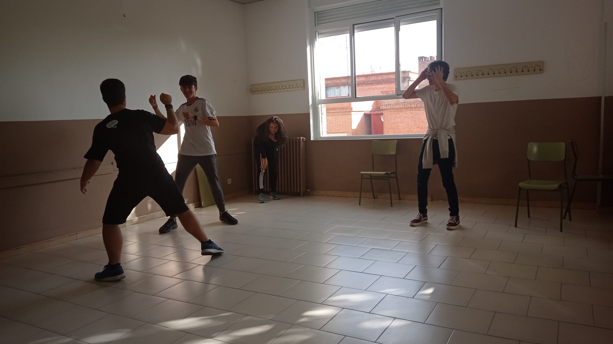
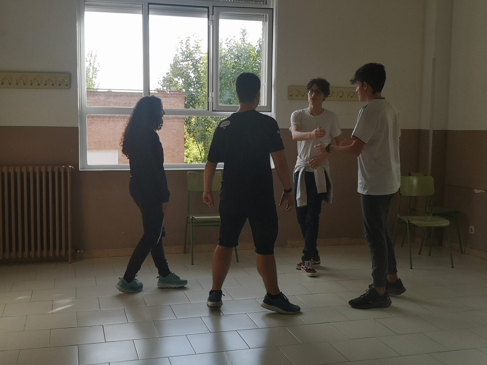
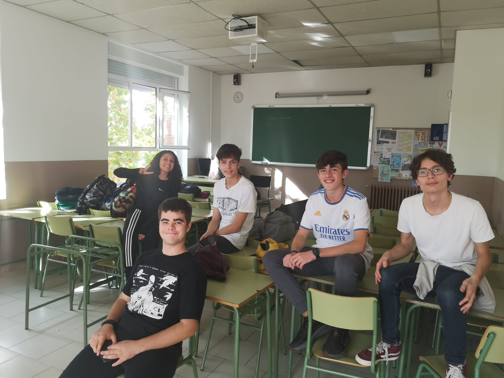
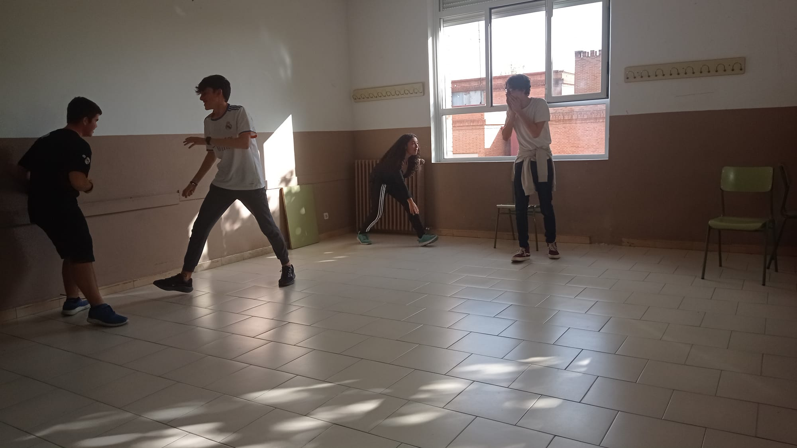
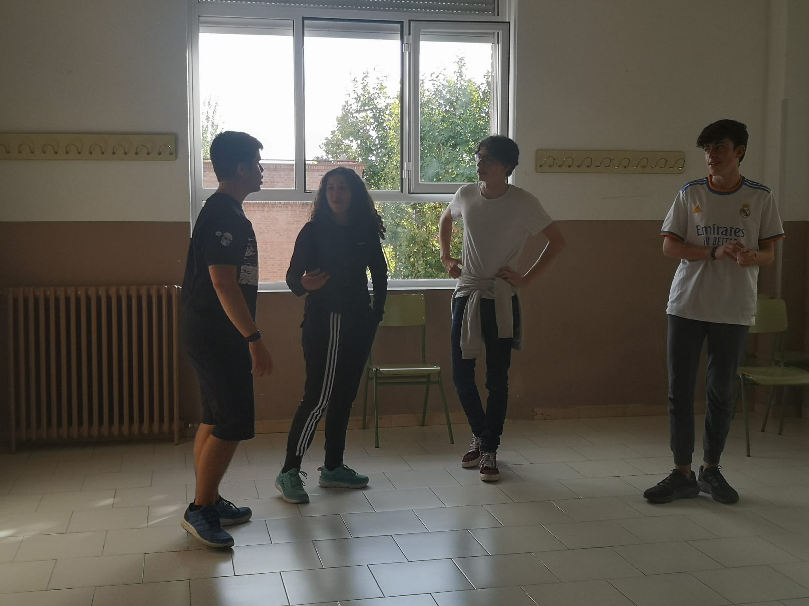

Improvisación
Reflexión:
Durante un tiempo del primer año del BI estuve atendiendo a un taller de improvisación teatral. Este consistía en que éramos divididos en grupos de unas 5 personas y se nos daba una instrucción abierta o una situación inicial y a partir de ahí debíamos improvisar una escena teatral coherente y a poder ser divertida. Para mí, asistir a este taller fue un auténtico reto, ya que yo tengo mucho miedo escénico, no se me daba del todo bien hablar en público y al principio me daba muchísima vergüenza hacer las escenas, tenía miedo de ponerme rojo delante de todos. No obstante, a medida que fui asistiendo a más y más sesiones, vi como estos miedos desaparecían y poco a poco yo iba mejorando. Llegué a ver el alcance de estas mejoras incluso en algunas asignaturas como inglés o lengua cuando tenía que presentar delante de toda la clase. En definitiva, no fue una experiencia fácil, pero me ayudó a mejorar y a superar algunos miedos.
Resultados de aprendizaje: nºs 1, 2 y 5.
Galería:
- 
- 
- 
- 
- 